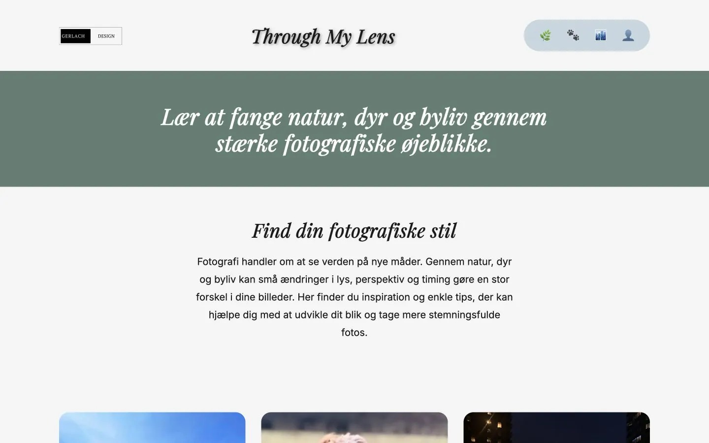

AI prototype
StudyMate AI
A study-platform prototype with focused AI assistant roles, a server-side API route and a clear chat flow.
What it shows: Role-based assistant design, frontend and backend integration, and explicit deployment limits.

Hi, I'm
SOFTWARE DEVELOPER • AI BUILDER • UX DESIGNER
I build digital experiences that are intelligent, intuitive and impactful.
Featured work
A focused selection of work combining design, code and practical problem-solving.
AI prototype
A study-platform prototype with focused AI assistant roles, a server-side API route and a clear chat flow.
What it shows: Role-based assistant design, frontend and backend integration, and explicit deployment limits.
Client website
A live advisory website that makes specialist life-science and investment content feel clear and credible.
What it shows: Client work with a clear content hierarchy and responsive presentation.

JavaScript game
A timing-based browser game where the player attacks, heals and faces faster enemies as the difficulty increases.
What it shows: Playable JavaScript with state, timing and keyboard input.

School project
A tsunami emergency guide designed to turn critical information into clear actions before, during and after a warning.
What it shows: UX writing, interaction and frontend around one clear task.

Supporting work
Two smaller projects that add client context and a more visual side to the portfolio.

Client website
A mobile-focused client website for presenting the menu, events and contact information.
View project
Photography and storytelling
A themed photography website exploring urban energy, living creatures and calm nature through my own images.
About me
Hi, I'm Martin. I study Multimedia Design and previously qualified as an IT support specialist. That combination helps me understand both how a digital product feels to use and how it works behind the interface.

I am preparing for student frontend and software roles where I can contribute with JavaScript, responsive interfaces, UX and practical technical problem-solving.
I start by understanding the need, clean up the structure and then build a solution that is easy to use. I like things to feel simple while still being technically sound.
I want to explore creative coding, interaction design, AI UX and digital storytelling in an international learning environment while strengthening my frontend foundation.
Tech stack
Technologies connected to live work, prototypes and the areas I am currently learning.
Applications
Current application material and documentation of my technical background.
Download my CV in Danish or English.
Read the AquaShield case about interface development, interaction and clear emergency information.
Documentation of my completed IT support education.
Contact
I'm open to student frontend or software roles, AI UX projects and academic collaborations or exchange opportunities.